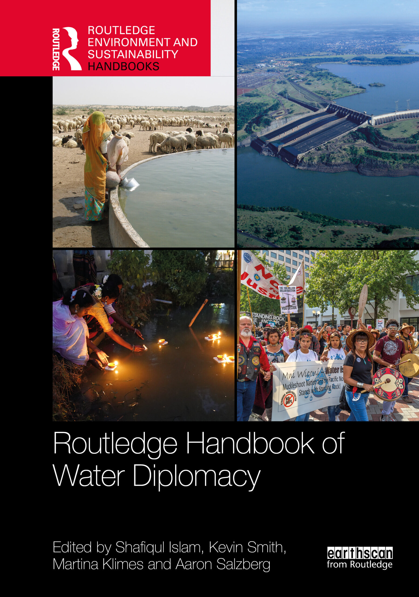

An open-access resource for water diplomats everywhere.

Cover photographs · attribution
- Top left “Water well in Thar Desert, India” by Vyacheslav Argenberg · CC BY 4.0
- Top right “Aerial view of Itaipu Dam” by International Hydropower Association (IHA) · CC BY 2.0
- Bottom left “NoDAPL Drums” by John Duffy · CC BY 2.0
- Bottom right “Santal Girls Floating Lighted Diyas on Water as a Traditional Ritual” by Biswarup Ganguly · CC BY 4.0


Composited and recoloured for the book cover.
Download the free electronic edition
What you can expect
- A practice-oriented reference that does not presuppose any specific background knowledge.
- 54 chapters across 9 sections, contributed by over 80 practitioners and scholars.
- Licensed under an open-access license that allows non-commercial derivative works (e.g., translations, executive summaries, etc.).
- The first edition of this “living” handbook is available now in electronic (free to download) and hardback formats.
- You can order hardback copies from Routledge.
- Browse the complete table of contents (all 54 chapters), read a brief overview, or explore key themes.